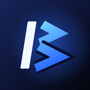

BlueScreen no celular
Conectado ao PC
Instalar no iPhone
Este navegador não instala apps. Copie o endereço e abra no Safari:
- Toque em Compartilhar Na barra do Safari. No iOS 26, ele fica no botão ⋯
- Escolha Adicionar à Tela de Início Se não aparecer, role a lista até o fim.
- Toque em AdicionarSe aparecer Abrir como app, deixe ligado. O BlueScreen vira um ícone e abre em tela cheia, sem a barra do Safari.
- Abra pelo ícone e digite o PIN mostrado no PCNo PC: Configurações › Rede local.
Instalado
Você já está no app. É só entrar com o PIN do PC.
Abrir o BlueScreenInstalar no Android
O app acha este PC sozinho na rede e guarda o endereço. Na próxima vez, é só tocar no ícone.
- Toque em Baixar o app e abra o arquivoO Android pede para permitir apps desta fonte (o navegador): permita só desta vez.
- Abra o BlueScreen e escolha este PCOu toque em "Já tenho o app" aqui em cima.
- Digite o PIN mostrado no PC
Abra esta página no celular
Aponte a câmera do celular para o código, na mesma rede Wi-Fi deste PC.
Usar sem instalar
Também funciona direto no navegador do celular.
Abrir no navegador